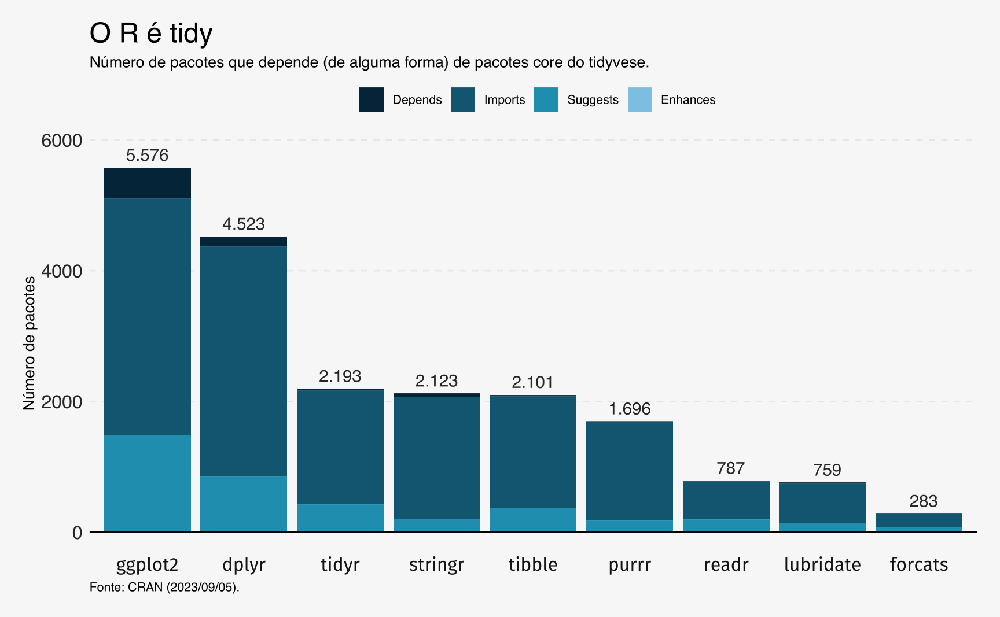

Tidyverse
O tidyverse é um metapacote, ou conjunto de pacotes. Pode-se pensar no tidyverse como uma família de pacotes, unidos por uma filosofia comum; grosso modo, os pacotes que compõem o tidyverse tem o mesmo objetivo: facilitar a manipulação de dados. Estes pacotes criaram uma nova forma de se escrever código, que substitui boa parte ou mesmo todas as funções base do R. Atualmente, o tidyverse parece estar se consolidando como a variante dominante do R. De fato, a maior parte dos pacotes do tidyverse consta na lista dos mais baixados no repositório CRAN.
O tidyverse é intimamente ligado com o estatístico Hadley Wickham, criador ou co-criador da maioria dos seus pacotes, e autor do influente artigo em que ele define o que é “tidy” data. Ele também é autor de diversos livros didáticos como R for Data Science e ggplot2: Elegant graphics for Data Analysis, que ajudaram a popularizar o tidyverse.
Wickham também tem posição de liderança dentro da Posit (antigamente conhecida como RStudio), que mantém o GUI mais popular de R e que patrocina inúmeras atividades vinculadas com o aprendizado de R, que costumam enfatizar os pacotes do tidyverse. De fato, tornou-se lugar comum começar a se ensinar R pelo tidyverse como se vê pela prevalência de cursos no Coursera ou Datacamp.
Quando se olha para a curta história do tidyverse é difícil explicar o porquê do seu enorme sucesso, mas é fato que este conjunto de pacotes se tornou um dialeto dominante dentro da comunidade do R. As funções do tidyverse tem algumas vantagens importantes sobre o base-R.
Consistência e qualidade
As funções do tidyverse possuem uma característica ausente na maior parte das funções base do R: consistência. Um exemplo imediato é o pacote stringr, que serve para manipulação de strings. Todas as funções deste pacote começam com prefixo str_* e seus argumentos seguem a mesma lógica: string e pattern como em str_detect(string, pattern)1. Além disso, as funções são mais otimizadas em relação às funções base do R.
O purrr faz algo similar, ao simplificar a família de funções apply em diversas funções map_*. O ganho mais relevante, neste caso, é que as funções map_* garantem um output consistente, em termos da classe do objeto que é retornado como resultado da função.
Em termos de eficiência, o tidyverse costuma ganhar das funções equivalentes em base-R. O dplyr/tidyr, de maneira geral, garante manipulações de dados muito mais velozes2, assim como o readr importa dados mais rapidamente3. As funções map também tem paralelos simples na família future_ do pacote furrr, que permite usar processamento paralelo no R.
Material de apoio
Há muito material de apoio para tidyverse: livros, materiais didáticos, posts em blogs, respostas em fóruns, etc. Como citado acima, o próprio Posit produz inúmeros materiais didáticos e livros que ajudam a aprender e a ensinar tidyverse.
Na medida em que o tidyverse consolida-se como o dialeto dominante isto tende a se tornar um ciclo virtuoso. O R é uma linguagem é bastante versátil, que reúne pesquisadores de campos distintos. Recentemente, parece haver uma convergência para o tidyverse. O campo de séries de tempo, por exemplo, agora tem o tidyquant, fable e modeltime que utilizam os princípios do tidyverse. Com o tempo, deve-se observar movimentos similares de outros campos.
Tudo em um
O tidyverse oferece funções que se aplicam a cada uma das etapas de uma análise de dados. Neste sentido, ele vai de ponta-a-ponta, cobrindo importação, limpeza, modelagem e visualização de dados. A natureza autocontida do tidyverse é bastante atraente pois oferece um caminho seguro para novatos no R, especialmente para quem tem interesse em ciência de dados.
Escalabilidade
O conhecimento no R muitas vezes é bastante horizontal. Cada pacote novo traz funções diferentes, que funcionam de novas maneiras e este conhecimento adquirido nem sempre se traduz para outras tarefas. Já sintaxe do dplyr é bastante geral, pode ser utilizada em vários contextos. O dbplyr, por exemplo, é um backend para databases (como BigQuery, PostgreSQL, etc.) que usa a sintaxe do dplyr como frontend. O mesmo acontece com dtplyr/tidytable que permite usar a sintaxe do dplyr junto com a eficiência do data.table. Até para dados complexos já existe o pacote srvyr que usa o survey como backend.
Facilidade de uso
Este último ponto é bastante mais contencioso. Eu acredito que o tidyverse é mais fácil do que base-R. Eu tenho um conhecimento razoável de base-R e avançado tanto de tidyverse como de data.table. Na minha opinião, a lógica do tidyverse de usar o nome das colunas de um data.frame como objetos é muito poderosa e intuitiva. Não só torna o código mais legível como também evita uma sintaxe carregada com operadores estranhos como $. A integração com pipes também simplifica muito o workflow da análise de dados. Por fim, fazer funções com tidyverse também é muito fácil.
Explorando o tidyverse
O “núcleo duro”, por assim dizer, do tidyverse é composto por 8 pacotes:
dplyrtidyrtibblereadrstringrlubridateforcatspurrrggplot2
Pessoalmente, gosto muito de todos estes pacotes, a ponto de ter listado todos no meu post de pacotes essenciais de R. Cada um destes pacotes resolve algum problema central na análise de dados. O pacote readr importa os dados; o tibble é a plataforma que contém os dados; dplyr e tidyr limpam os dados; e, finalmente, ggplot2 visualiza os dados. Os pacotes lubridate, forcats e stringr lidam com as três classes importantes de dados: datas, factors e texto. Por fim, o pacote purrr amarra todo este ecossistema de pacotes numa abordagem de programação funcional que é elegante e eficiente.
Além dos pacotes core, o tidyverse traz junto consigo outros pacotes importantes como rvest/xml2/httr, para webscrapping, jsonlite/readxl/haven/feather, para importação de outros tipos de arquivos de dados e modelr/broom para modelagem de dados e apresentação de resultados.
O tidyverse em números
Olhando para as estatísticas do CRAN, vê-se que os pacotes do tidyverse são muito relevantes dentro do ecossistema. Os dados compilados abaixo mostram o retrato dos pacotes do CRAN em 05 de setembro de 2023, quando havia cerca de 19.800 pacotes ativos.
Atualmente, cerca de um terço dos pacotes no CRAN dependem de algum dos pacotes core do tidyverse. O crescimento desta razão tem sido crescente: de todos os pacotes ativos em 2023, 40% dependem diretamente do tidyverse. Note que no gráfico abaixo, o ano de publicação reflete o ano da versão mais recente de cada pacote. Assim, pacotes ativos cuja última atualização foi anterior a 2016 dificilmente vão possuir alguma dependência com os pacotes do tidyverse já que a maioria deles não existia nesta época.
Olhando os dados por pacote vê-se que o ggplot2 e dplyr são os mais populares.

A filosofia do tidyverse
A filosofia geral do tidyverse toma muito emprestado da gramática. As funções têm nomes de verbos que costumam ser intuitivos e são encadeados via “pipes”4 que funcionam como conectivos numa frase. Em tese, isto torna o código mais legível e até mais didático. A tarefa de renomear colunas, criar variáveis e calcular uma média nos grupos torna-se “linear” no mesmo sentido em que uma frase com sujeito-verbo-objeto é linear.
Pipes
O pipe, essencialmente, carrega o resultado de uma função adiante numa cadeia de comandos: objeto |> função1 |> função2 |> função3. Isto tem duas vantagens: primeiro, evita que você use funções compostas que são lidas “de dentro para fora” como exp(mean(log(x))); e, segundo, dispensa a criação de objetos intermediários “inúteis” que estão ali somente para segurar um valor que não vai ser utilizado mais adiante.
model <- lm(log(AirPassengers) ~ time(AirPassengers))
#> Função composta
mean(exp(fitted(model)))
#> Usando pipes
model |> fitted() |> exp() |> mean()
#> Usando objetos intermediários
x1 <- fitted(model)
x2 <- exp(x1)
x3 <- mean(x2)Num contexto de manipulação de dados pode-se ter algo como o código abaixo.
tab_vendas_cidade <- dados |>
#> Renomeia colunas
rename(date = data, city = cidade, variable = vendas, value = valor) |>
#> Transforma colunas
mutate(
value = value / 1000,
date = readr::parse_date(date, format = "%Y-%b%-d", locale = readr::locale("pt")),
year = lubridate::year(date)
) |>
#> Agrupa pela coluna year e calcula algumas estatísticas
group_by(year) |>
summarise(
total = sum(value),
count = n()
)Em base-R o mesmo código ficaria algo como o descrito abaixo.
names(dados) <- c("date", "city", "variable", "value")
dados$value <- dados$value / 1000
dados$date <- readr::parse_date(
dados$date, format = "%Y-%b%-d", locale = readr::locale("pt")
)
dados$year <- lubridate::year(dados$date)
tab_vendas_cidade <- tapply(
dados$value,
dados$city,
\(x) {data.frame(total = sum(x), count = length(x))}
)Há um tempo atrás argumentava-se contra o uso de “pipes”, pois estes dificultavam a tarefa de encontrar bugs no código. Isto continua sendo parcialmente verdade, mas as funções do tidyvserse atualmente têm mensagens de erro bastante ricas e permitem encontrar a fonte do erro com relativa facilidade. Ainda assim, não se recomenda encadear funções em excesso, i.e., pipes com 10 funções ou mais5.
Funções
Outra filosofia do tidyverse é de que tarefas rotineiras devem ser transformadas em funções específicas. Neste sentido, os pacotes dplyr, tidyr e afins são recheados de funções, às vezes com nomes muito semelhantes e com usos redundantes. As funções starts_with e ends_with, por exemplo, são casos específicos da função matches. Há funções que permitem até duas formas de grafia como summarise e summarize. Outras como slice_min e slice_max são convenientes mas são literalmente: arrange + slice.
Somando somente os dois principais pacotes, dplyr e tidyr, há 360 funções disponíveis. Contraste isto com o data.table que permite fazer 95% das transformações de dados somente com dt[i, j, by = c(), .SDcols = cols].
Mesmo as funções base do R costumam ser mais sucintas do que códigos em tidyverse. No exemplo abaixo, a função tapply consegue o mesmo resultado que o código mais extenso feito com dplyr.
tapply(mtcars$mpg, mtcars$cyl, mean)
mtcars |>
group_by(cyl) |>
summarise(avg = mean(cyl))As vantagens do tidyverse se tornam mais evidentes com o tempo. De fato, o pacote permite abstrações muito poderosas, e eventualmente, pode-se fazer um código centenas de vezes mais sucinto combinando as suas funções. Em outros casos, as funções do tidyverse são simplesmente muito convenientes.
Tome a starts_with, por exemplo, que seleciona as colunas que começam de uma certa forma. Suponha uma tabela simples em que há múltiplas colunas cujos nomes começam com a letra “x”. O código em tidyverse é muito mais limpo que o código em base-R.
df <- df |>
select(date, starts_with("x"))
df <- df[, c("date", names(df)[grep("^x", names(df))])]
df <- df[, c("date", names(df)[stringr::str_detect(names(df), "^x")])]O exemplo abaixo é inspirado neste post, que mostra como calcular lags de uma série de tempo que esteja em um data.frame. Calcular defasagens de uma série de tempo é uma tarefa um pouco árdua quando se usa somente funções base. O código abaixo mostra não somente a elegância do tidyverse mas também a facilidade em se criar funções a partir do tidyverse.
calculate_lags <- function(df, var, lags) {
map_lag <- lags |> map(~partial(lag, n = .x))
out <- df |>
mutate(
across(.cols = {{var}},
.fns = map_lag,
.names = "{.col}_lag{lags}")
)
return(out)
}
df <- data.frame(
date = time(AirPassengers),
value = as.numeric(AirPassengers)
)
df |> calculate_lags(value, 1:3) |> head()
# date value value_lag1 value_lag2 value_lag3
# 1 1949.000 112 NA NA NA
# 2 1949.083 118 112 NA NA
# 3 1949.167 132 118 112 NA
# 4 1949.250 129 132 118 112
# 5 1949.333 121 129 132 118
# 6 1949.417 135 121 129 132Desvantagens
O lado negativo da abordagem “gramatical” é que para não-falantes de inglês muitas destas vantagens são despercebidas6 e o resultado é somente um código “verborrágico”, cheio de funções.
Atualmente, parece haver um consenso crescente de que a melhor forma de começar a aprender R é começando pelo tidyverse; esta visão não é livre de críticos como de Norm Matloff, professor de estatística da UC Davis. Essencialmente, Matloff considera que o tidyverse é muito complexo para iniciantes: há muitas funções para se aprender e o incentivo à programação funcional torna o código muito abstrato. O tidyverse também esconde o uso do base-R e não ensina operadores básicos como [[ e $. Matloff também considera que “pipes” prejudicam o aprendizado pois dificultam a tarefa de encontrar a fonte dos erros no código.
Um fato particularmente irritante do tidyverse é a frequência com que os pacotes mudam. Na maior parte das vezes, as mudanças são positivas, mas isto faz com que o código escrito em tidyverse não seja sustentável ao longo do tempo.
Eu demorei um bom tempo para entender as funções tidyr::gather e tidyr::spread e, atualmente, ambas foram descontinuadas e substituídas pelas funções pivot_longer e pivot_wider. As funções mutate_if, mutate_at e similares do dplyr foram todas suprimidas pela sinataxe mais geral do across. A função tidyr::separate agora está sendo substituída por separate_wider_position e separate_wider_delim.
Mesmo um código bem escrito há poucos anos atrás tem grandes chances de não funcionar mais porque as funções foram alteradas ou descontinuadas. Em 2021, Wickham discutiu este problema abertamente numa palestra. Desde então, o tidyverse tem melhorado a sua política de manutenção de funções.
A velocidade e eficiência das funções do tidyverse pode ser um problema, mas atualmente existem diversas boas soluções como o já citado tidytable. Particularmente, são raras as situações em que a velocidade do tidyverse me incomoda.
À força de uma conclusão
O tidyverse é um conjunto de pacotes muito úteis que atualmente dominam o ecossistema do R. Pessoalmente, acredito que a melhor forma de aprender R é começando pelo tidyverse. As suas vantagens mais do que compensam as suas falhas. Além disso, o fato dele ser o dialeto dominante de R é, por si só, um bom motivo para aprendê-lo.
A crítica de Matloff é válida em um ponto importante: em grande parte, o tidyverse substitui o base-R e dispensa o seu aprendizado. Isto cria uma lacuna importante que eventualmente vai causar prejuízos. Neste sentido, recomendo dois livros para aprender base-R e os princípios mais gerais da linguagem:
Wickham, H. Advanced R. 1a ed. - É importante notar a edição. A edição mais recente deste livro omite bastante do base-R.
Footnotes
As funções
gsub,grepegrepl, por exemplo seguem o padrãopattern,string. Já a funçãostrsubusa o padrãostring,pattern. Para mais diferenças entre as funções base para manipulação de texto e ostringrconsulte este material.↩︎Existem diversos benchmarks que atestam os ganhos do
dplyrem relação ao base-R. Veja, por exemplo, este comparativo. Apesar disto, odplyré menos eficiente que seu concorrentedata.table. Existem algumas alternativas como dtplyr e, mais recentemente, tidytable, que fornecem a velocidade do data.table com a sintaxe dodplyr.↩︎Similarmente ao
dplyr, oreadrtambém perde para seu concorrentedata.table::fread. Contudo, o pacotevroomoferece uma alternativa mais veloz aoreadrdentro do universo tidyverse.↩︎Para saber mais sobre pipes e a diferença entre o novo pipe nativo
|>e o pipe|>domagrittrveja meu post sobre o assunto.↩︎Para mais sobre pipes consulte o meu post sobre o assunto.↩︎
No fundo, isto é ainda mais um incentivo para aprender inglês.↩︎